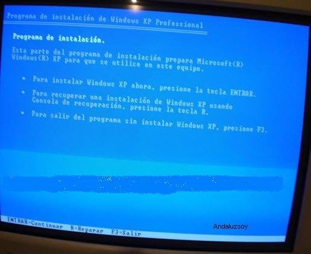
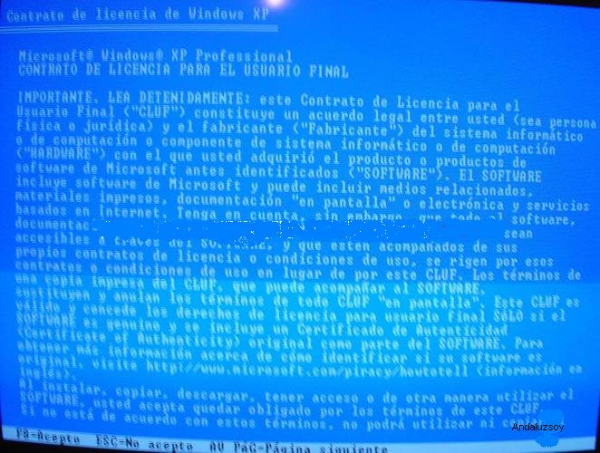
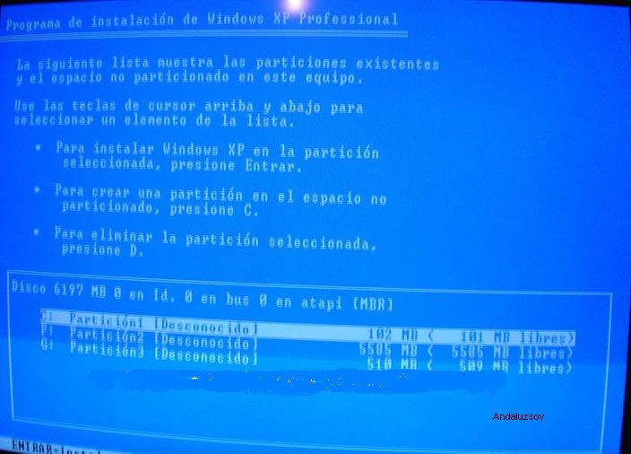
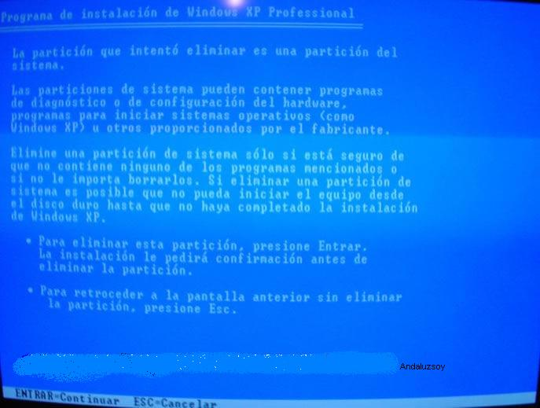
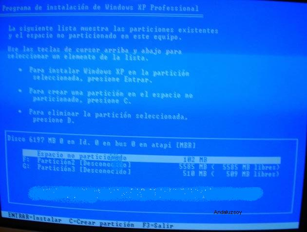
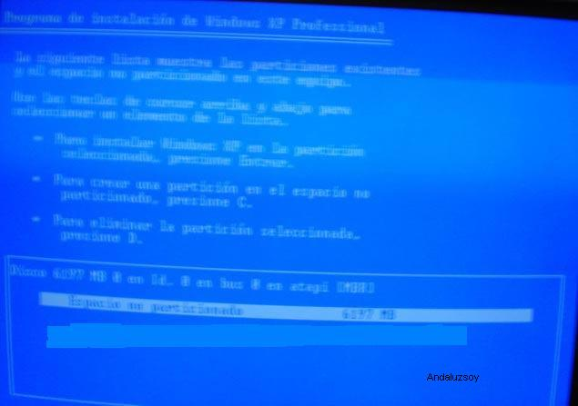
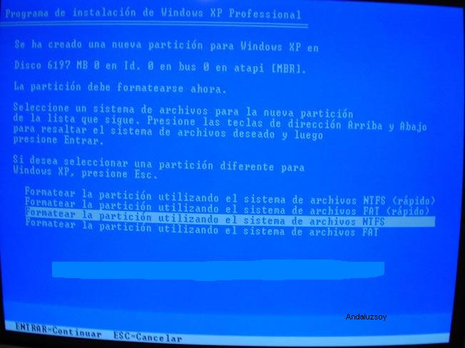
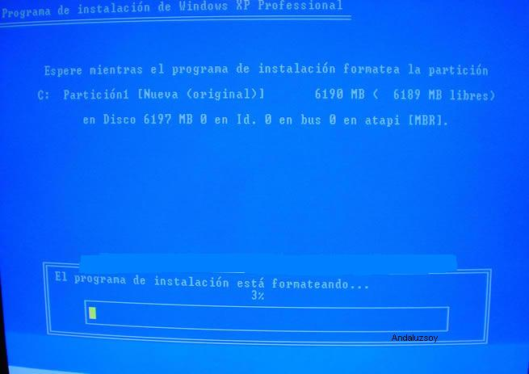
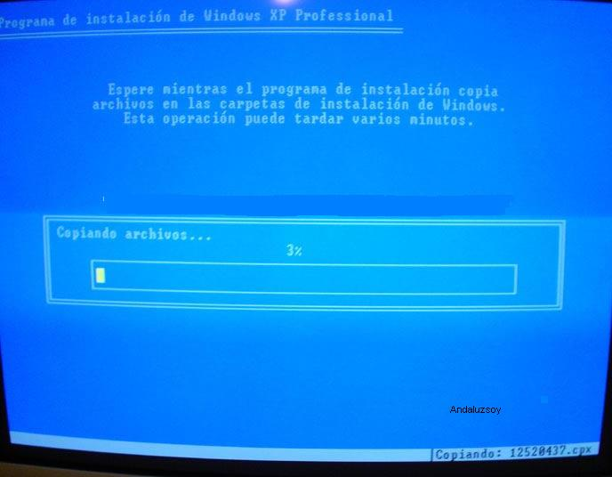
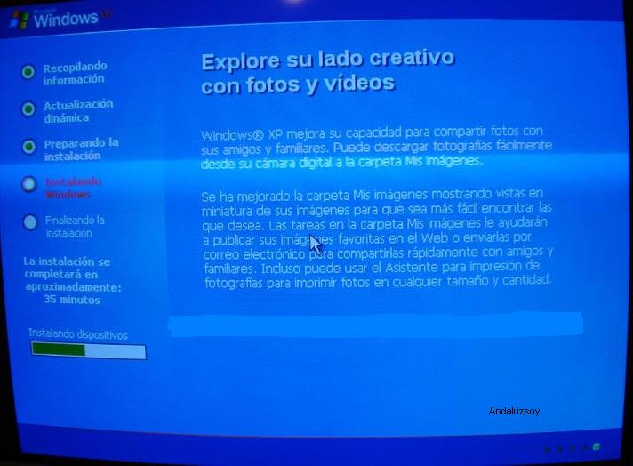

FORMATEAR E INSTALAR WINDOWS XP
Si queremos formatear Windows Vista y volver a instalar nuestro Windows XP, tan solo necesitaremos dos cosas: los drivers del hardware y un CD de instalación de Windows XP.
Para formatear la partición NTFS e instalar nuevamente Windows XP seguiremos estos pasos:
Con el ordenador apagado introducimos el disco nº 1 de instalación de Windows XP (en total son 6 discos) y arrancamos el ordenador.
Esto se puede obviar si arrancas desde el CD-ROM, para ello procederemos a entrar en la BIOS para cambiar el orden de boteo.
Tendremos insertado el CD-ROM de Windows XP en el lector de CD´s .
Una vez haya cargado los 6 discos, nos ofrecerá las siguientes opciones:
Instalar Windows XP.
Recuperar la instalación de Windows XP
Salir del programa.

Escogeremos la opción de Instalar Windows XP, pulsando la tecla Intro.
Pulsamos la tecla F8 para aceptar el contrato de licencia y continuar con el proceso.

En la siguiente ventana tenemos nuevamente la opción de reparar la instalación de Windows XP o instalación Nueva.
Escogemos la opción Instalación nueva y presionamos la tecla ESC. para continuar.
En la siguiente pantalla vemos todas los discos y particiones, con tres opciones:
Instalar Windows XP.
Crear nueva partición.
Eliminar la partición seleccionada.

Ahora vamos a eliminar la partición, para ello la seleccionamos la partición o particiones y pulsamos la tecla D y luego la tecla L para eliminarla.

En el cuadro de particiones veremos que ha desaparecido el nombre de unidad que tenía y en su lugar aparece el texto Espacio no particionado.

Podremos eliminar una o varias particiones y volverlas a crear,es como el fdisk, con una interfaz mas amigable.
Seleccionamos el texto de Espacio no particionado y pulsamos la tecla Intro.
Con la tecla C podríamos crear una nueva partición.
Ahora en el cuadro de particiones aparecerá con el nombre de unidad (Por ejemplo C:) a continuación pulsamos la tecla Intro para continuar con la instalación.

En la siguiente ventana aparecerán las opciones para Formatear la partición,escogemos la opción de formatear en NTFS

y comenzará de inmediato a formatear la partición.

Una vez que termine de formatear la partición continuará automáticamente la instalación de Windows XP.

Y tan solo tenemos que seguir las instrucciones que van apareciendo en pantalla, hasta terminar la instalación de Windows XP.

Andaluzsoy